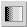

 The Blend tool renders a gradient based on the current foreground and background colors. The start and end points are set using the mouse. Simply drag and drop a line, and the gradient will be rendered using the foreground color as the start and the background color as the end. The quality of the resulting gradient will depend on the maximum number of colors available to the blend tool.
Blend Settings
The Opacity slider sets the transparency level for the blend. A higher opacity setting results in a more opaque blend and a lower setting results in a more transparent blend.
The Mode dropdown list provides a selection of blend application modes. A list of these modes can be found in the glossary.
The Offset slider changes the distance from the start point that the gradient is rendered. A setting of zero will render the gradient across the entire gradient area. Higher settings will force the gradient to start rendering at a later point.
FG to BG (RGB): Renders the gradient in RGB color space.
FG to BG (HSV): Renders the gradient in HSV color space.
FG to Transparent: Renders the gradient using the foreground color and fades that color into transparent over the length of the gradient.
Custom Gradient: Renders the gradient using the currently selected gradient.
See Gradient Selection for further information.
Linear: Maps the rendered gradient along a linear path directly from start to end. This is the default behavior.
Bi-Linear: Maps the complete gradient along half of the total distance, then reverses the gradient for the remainder.
Radial: Maps the gradient in a circle. The start point for the gradient represents the center of the circle and the end point marks the radius. The colors are rendered such that the gradient fades from the center of the circle to the outer edge, from foreground to background.
Square: Maps the gradient as a square. The gradient will always be rendered as a perfect square with the sides facing left, up, right, and down. The start point sets the center of the square and the end point sets the outer edge of the square.
Conical (symmetric): Creates a gradient that is mapped to a circle. The gradient is rendered around the start point which represents the anchor around which the render takes place. The unseen line between the start and end points sets the start of the gradient. Directly opposite this is where the gradient is completed and reversed creating a conical effect.
Conical (asymmetric): Creates a gradient similar in detail to the Conical (symmetric) one, but the gradient is not reversed at the half-way point.
Shapeburst (angular): Maps the layer or selection shape prior to rendering the gradient. The resulting blend effect is based on that shape. The start and end points do not matter.
Shapeburst (spherical): This method is similar to the Shapeburst (angular) method except that the shape of the final render is less angular. Start and end points are inconsequential.
Shapeburst (dimpled): Again similar to the Shapeburst (angular) method, but is rendered in a collapsed way. The start and end points do not affect this technique.
Spiral (clockwise): This renders a spiral shape in a clockwise direction.
Spiral (anticlockwise): This renders a spiral shape in an anti-clockwise direction.
This option is not available for all Gradient settings. It provides three options.
None: This option renders the gradient normally.
Sawtooth Wave: This renders the gradient normally, but repeats the gradient from the start and end points.
Triangular Wave: This option renders the gradient normally and repeats the gradient in the same fashion as Sawtooth Wave, but reverses the gradient for every second iteration.
Default Keyboard Shortcut: L
Key modifiers:
Ctrl is used to constrain the blend angle to increments of 15 degrees.